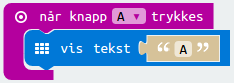
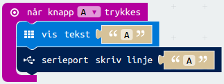
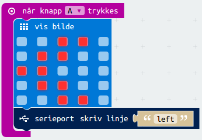
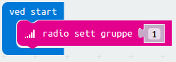
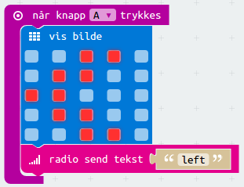
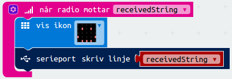

Ved hjelp av to micro:bit'er skal vi lage en fjernkontroll for presentasjoner!
Den ene micro:bit'en klikker vi på for å skifte slide, mens den andre
micro:bit'en tar i mot klikkene våre og sender dem til datamaskinen.
Steg 1: Datamaskinen gjør seg klar
Først må datamaskinen gjøre seg klar til å lytte på en micro:bit.
En micro:bit kan snakke til datamaskinen den er koblet til med USB over noe som
kalles en seriell port. For å styre hva datamaskinen gjør med det micro:bit'en
sier trenger vi et program på datamaskinen som oversetter det som kommer fra
seriellporten. Etterhvert vil vi at micro:bit'en skal klikke gjennom
presentasjoner for oss. Vi trenger derfor et program som kan late som om man
trykker på tastaturet.
Sjekkliste
Windows
For å installere bibliotekene på Windows må du åpne en Anaconda Command
Prompt og skrive
conda install pyserial
pip install pyautogui
Dette Anaconda Command Prompt-vinduet vil vi omtale som Terminal videre
i teksten.
Mac
For å installere bibliotekene på Mac åpner du først en Terminal (for
eksempel ved å trykke Command+Space og deretter skrive terminal). Skriv
deretter følgende i Terminal-vinduet:
Vi har nå installert bibliotekene vi trenger. Vi skal også finne navnet på
seriellporten hvor micro:bit'en er koblet til. Skriv dette i
Terminal-vinduet:
ls /dev/uc.*
Når du trykker Enter vil du se en liste. En av dem har et navn som ligner på
/dev/cu.usbmodem1422. Dette er navnet på seriellporten. Husk dette til neste
steg.
Linux
For å installere bibliotekene på Linux åpner du først en Terminal (for
eksempel ved å trykke Control+Alt+T). Skriv deretter følgende i
Terminal-vinduet:
Om dette gir en feilmelding som sier at filen serial_key.py ikke kan åpnes
så ligger filen på feil sted. Flytt filen serial_key.py til katalogen
Terminal har åpen og prøv igjen. Du kan se hvilken katalog Terminal
har åpen ved å lese begynnelsen av linjen du kan skrive på (for eksempel
begynner den på C:\ på Windows)
Programmet skal si at det lytter på en port, men ikke noe mer skal skje
enda. Dersom programmet i stedet viser en hjelpetekst betyr det at det ikke
klarte å detektere micro:bit'en. Du kan da skrive inn navnet på porten
selv. For eksempel
python serial_key.py /dev/cu.usbmodem1422
på Mac (bruk det samme nummeret som du fant ovenfor).
Steg 2: Micro:bit snakker
Nå skal micro:bit snakke til datamaskinen!
Sjekkliste

Test prosjektet
Det er to forskjellige måter vi kan teste micro:bit-programmer på:
Siden vår kode skal reagere når man trykker på A-knappen på micro:biten
kan du simulere dette ved å klikke på den svarte knappen til venstre over
bokstaven A på micro:bit-simulatoren. Bokstaven A skal vises på
skjermen til micro:bit-simulatoren.
Det lastes nå ned en fil som heter microbit-presentasjon.hex til
datamaskinen din. Samtidig dukker det opp et vindu som sier at du må flytte
denne filen til MICROBIT-disken. Dersom du trenger hjelp til dette så spør
en av veilederne.
Sjekkliste

Steg 3: Kontroller en presentasjon
Nå skal vi bruke micro:bit'en til å gå til neste side i en presentasjon.
Sjekkliste

Steg 4: Fjernkontroll
Micro:bit'en henger jo fast i datamaskinen. Hvordan kan vi kontrollere
presentasjonen uten å være i nærheten av datamaskinen?
For å snakke til datamaskinen over seriellporten må micro:bit'en være koblet til
datamaskinen. Det er jo ikke så nyttig! Vi skal nå se hvordan vi kan bruke en
annen micro:bit for å snakke til den micro:bit'en som henger fast i datamaskinen.
For at to micro:bit'er skal snakke sammen kan vi bruke Radio. Ved å bruke
radio-funksjonene kan en micro:bit sende en melding til en eller flere andre
micro:bit'er.
Sjekkliste

Radio-gruppe
Hvilken gruppe vi setter er viktig. Det er to ting du må ta hensyn til:
Alle micro:bit'er som skal snakke sammen må bruke samme gruppe.
Alle andre micro:bit'er i nærheten som bruker radio må bruke en annen gruppe.
Det er derfor lurt å prøve å velge et litt uvanlig tall (ikke 1 som i
eksempelet over) mellom 0 og 255. Om dere er mange i samme rom kan dere
spørre veilederen om å gi dere alle hvert sitt gruppenummer.
Sjekkliste


Det kan hende du må starte python-programmet på nytt etter at du har koblet
ut og inn micro:bit'ene.
Test prosjektet
Nå er programmet vårt ferdig. Du skal nå kunne trykke på A- eller
B-knappen på micro:bit'en som ikke er koblet til datamaskinen. Den vil sende
beskjeden left eller right til den andre micro:bit'en, som sender dette
videre til datamaskinen slik at presentasjonen endrer seg.
Forbedre denne siden
Funnet en feil? Kunne noe vært bedre? Hvis ja, vennligst gi oss tilbakemelding ved å lage en sak på Github eller fiks feilen selv om du kan. Vi er takknemlige for enhver tilbakemelding!